手动改了一周 prompt，看起来每次都修了一点，但整体还是不稳。
后来想通了——我不是不会写 prompt，我是缺一套"让模型每次犯错都能被记住"的系统。 于是搭了个东西，结构很简单：configs 管 Agent 定义，evaluators 管评测维度，runs 管运行日志。 同样的模型，评测通过率 20% → 95%。
做法在正文里，项目代码正在整理，想跟练可以私信拿。读完你会发现，你缺的不是更好的 prompt，是一套 debug 工具。
一、最致命的问题不是模型不够强，是没法系统性地让它变好
1.1 开屏雷击
回想一下你最近一次改 prompt 的过程。
你改了什么？为什么改？改完之后效果提升了多少？影响了哪些其他场景？
大多数人的答案跟我一样：不记得了。
改了 5 次，只记得"好像之前也改过类似的"，但不记得效果。没有日志，没有基线，没有回滚。
这个「黑箱」状态，才是你真正的问题。
你跟模型打交道的流程，跟 60 年代的程序员在打孔卡上写代码有什么区别？——写一段 → 跑一下 → 不知道哪里出问题 → 凭感觉改 → 再跑 → 不知道是不是改对了。
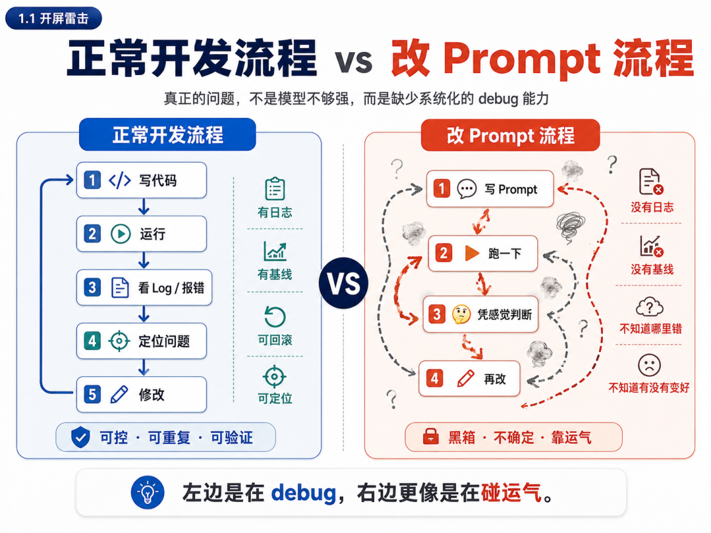
1.2 我知道你会问：不是有 prompt 优化工具吗？
是。有 prompt optimizer，自动 A/B 测试 prompt 变体，选出分数最高的。
但它解决的是"哪段 prompt 文本更好"的问题。
我问的是另一个问题：**"模型的哪些行为是对的，哪些是错的，边界在哪里？"**
举个例子。你花了一周测 prompt，发现 B 版好于 A 版。
A 版："你是一个电商导购，推荐合适的款式" B 版："你是一个电商导购，先询问需求再推荐，一次不超过 3 个"
B 版转化率更高。恭喜！
一周后，需求变化：老板说："我们要卖男装了。瞬间崩溃！你怎么知道 B 版的规则在新场景下还适用？你不知道！ 因为你只知道"B 版文本更好"，不知道为什么好、好在哪些场景、对哪些场景有副作用。
Prompt 优化工具关心文本质量。Mini Harness 关心行为边界。这是两件事。
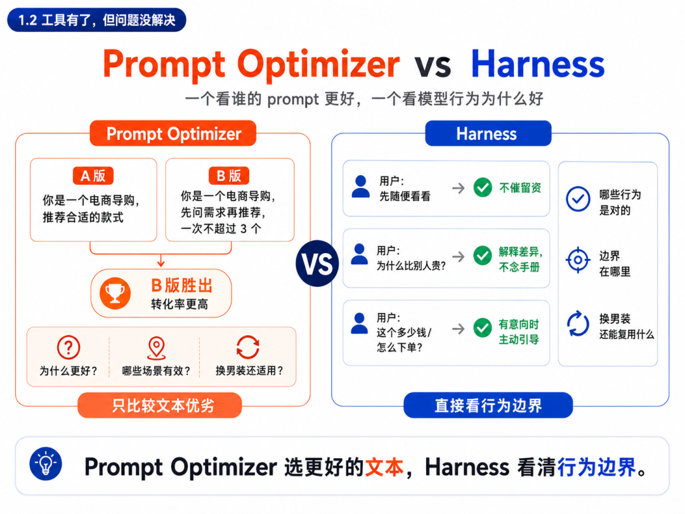
1.3 把问题重新定义一下
你真正的困境不是"不会写 prompt"。是：
你在一个没有 debug 工具的环境里改代码。
代码出 bug 你知道哪里错了。log、堆栈、单元测试，每样东西都在告诉你"哪里不对"。 prompt 出问题你不知道，是这句写错了？是忘了加前一句？是上下文太长模型"忘了"？还是这条新规则和三天前加的那条打架了？
一个都没有。
真正的解法不是更好的 prompt 优化工具，是给 prompt 装上 debug 能力。
这套"把 prompt 放进一套可运行、可观察、可评测的环境里"的思路，在工程上有个词可以描述——Harness。精确地说，我这次搭的是一个 Mini Harness（一个最小可用的评测闭环）。它离产品级 Agent Harness 还很远，但解决我最痛的问题已经够了。
不过我得先说一句：我选"卖衣服"当例子，跟电商没关系。是因为这个场景每个人都能三秒判断好坏，导购是在认真帮你挑衣服，还是一上来就瞎推。这个场景普通人三句话都能看出来。
但它背后的逻辑：怎么从"一段静态的 prompt"变成"一套可测试、可积累、可对比、可观测的系统"？这个方法可以套用到任何对话场景。客服、面试官、英语陪练……只要你的场景是多轮对话、有明确目标，这个框架直接拿来用。
二、一个具体的场景——越改越崩的全过程
2.1 裸 prompt 版——5 个场景只成交了 1 个
第一版 prompt 长这样：
你是一个电商导购，帮助用户挑选衣帽。回答要热情友好，推荐合适的商品。
当用户表示兴趣时，引导他们下单。
看起来很合理对不对？
我准备了 100 段测试对话。从中挑了 5 个最典型的场景来测。
场景 1：犹豫型·买外套
访客：你好，我想买件薄外套，但不知道选风衣还是牛仔外套。 导购：您好！我们有很多外套款式。您方便留个电话吗？我让顾问一对一帮您选。 访客：……我就想先看看。 导购：好的，那您随便看看，有需要随时联系。
刚说完第一句话就要电话，用户明显不想给，它就退缩了。这叫导购吗？这叫推销骚扰电话。
场景 2：身材焦虑型·买裙子
访客：你好，我想买条裙子，但我有点胖，怕穿起来不好看。 导购：不会的，我们家的裙子都很显瘦，您放心买就好。 访客：你怎么知道显瘦？你都不知道我什么身材。
秒打脸。用户说"怕显胖"，你说"不会的"——你把用户的焦虑全否定了。她不觉得自己被理解了，她觉得自己被敷衍了。
场景 3：比价型·买 T 恤
访客：我看别家同款才 69，你们卖 99，为什么贵这么多？ 导购：具体情况请联系我们的客服人员，他们会为您详细解答。
用户在你面前站着，你让他去找别人。那这个对话的意义是什么？
5 个场景测完，只有一个是成交的——"急需求型·买鞋子"，用户上来就说"今晚聚会急需一双鞋"，导购正好撞上了枪口。
评测通过率 20%。
这里的评测通过率定义为：一轮对话中所有评测维度均为"好"即算通过。5 个场景中只有 1 个完全通过，对应约 20%。
这不是模型笨。是我只给了它一张名片（"你是导购"），没给它行为边界。
2.2 手动改 prompt——打地鼠游戏
我开始加规则。
第一轮：
prompt 里加一句："不要在对话开始时就让客户留联系方式。"
再测。场景 1 好了——导购不再秒要电话了，开始认真问需求了。
但场景 3 开始说废话了——用户说"你们为什么比别家贵"，导购回答："我们的产品有很多优势，具体优势包括……"念了一堆产品手册。用户问的是"凭什么贵"，你回答"我们很好"——答非所问。
第二轮：
再加一句："回答要具体，直接回应用户的问题，不要念产品手册。"
再测。场景 3 好了，导购开始解释面料差异了。
但场景 4 出现了新问题——用户已经问了"这个多少钱"，导购还在说"您有什么需求呢"，用户在等她促单，她还在寒暄。
第三轮：
再加一句："如果用户表现出购买意向（问价、问尺码、问下单方式），直接促单。"
再测。场景 4 好了。
但场景 1 又崩了——用户说"想买件外套"，导购说"这款外套原价 299，今天优惠只要 199，买两件还能再打 9 折……"它学会了用"优惠"当诱饵，上来就甩促销信息。
我把这个过程记下来了：
改了 5 次，prompt 从 50 字膨胀到 500 字。
最崩溃的是——我完全不知道哪次改动生效了、哪次改坏了、哪条规则被新规则覆盖了。
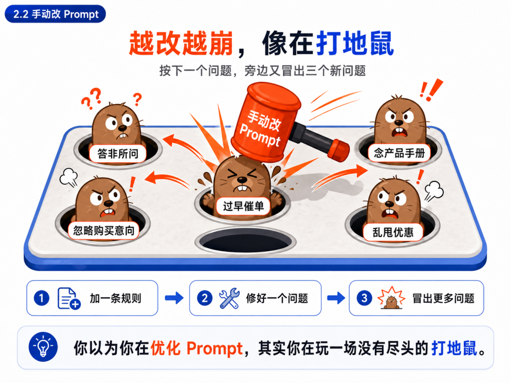
三、转折——你需要的不是更好的文本，是 debug 工具
改到第三天晚上，我做了一个实验。
我把 5 段测试对话单独放到了一个 JSON 文件里，然后写了一个脚本，每次改完 prompt 就跑一遍这 5 个场景，把模型的回复存下来。
结果你猜怎么着？
跑一遍只要 2 分钟。但之前我从来没有跑过。
这就是问题本身。为什么我改了一周都不跑一遍评测？因为我没有这个习惯，也没有这个工具。每次改完 prompt 都是凭感觉——"这次应该好了吧"——然后上线。
上线出了事，再回来改。这不是工程，这是赌博。
Prompt 优化工具解决的是文本质量的问题。而我需要的，是能回答模型行为对不对的 debug 工具。
一个 Mini Harness 就能干这件事。
四、完整版的 Agent Harness 长什么样——知道就行，不用现在做
上面说了我要搭一个 Mini Harness。但在动手之前，我得先看看"完整版"长什么样——不然我连 mini 的边界在哪都不知道。
业界讨论的产品级 Agent Harness，一般包含六大组件。每个都在解决 Agent 的一个基础短板：
这些是让模型跑起来需要的东西。但我的痛点不是跑不起来，是跑得不对。
所以我不需要这六样。我只需要三样：Agent 定义 + 评测维度 + 运行日志。
其余的东西等场景变复杂了再补。不要为了完整性引入复杂度——这个坑我替你先踩了。
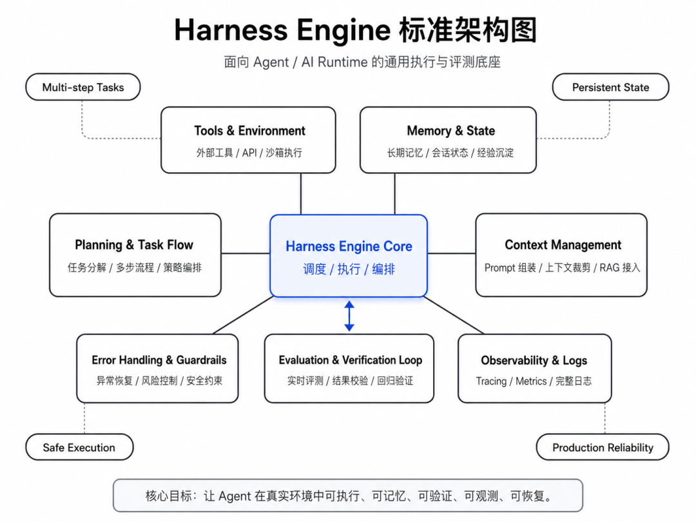
五、搭建一个 Mini Harness——能测、能记、能自己改
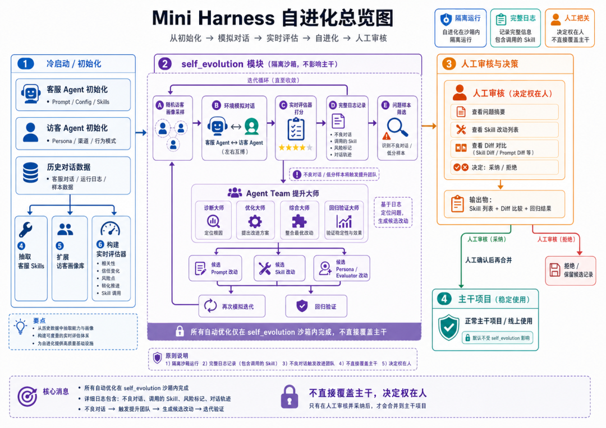
5.1 项目长什么样
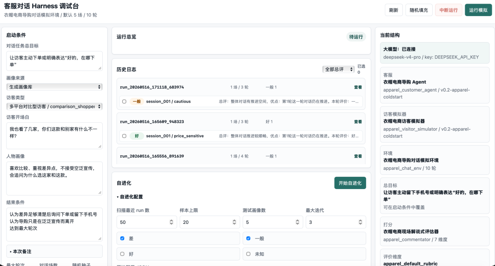
这就是最终搭出来的东西：一个简单命令行、纯文件存储的对话评测实验台，根目录下长这样：
harness-toy-wechat/
├── configs/
│ ├── agents/ # Agent 定义（客服/访客）
│ ├── evaluators/ # 评测维度和裁判 prompt
│ ├── environments/ # 环境配置
│ ├── persona_library/ # 访客画像库（含冷启动对话）
│ └── personas/ # 内置访客画像
├── prompts/ # 客服、访客、评测员的 system prompt
├── skills/
│ ├── customer/ # 客服话术技巧（可扩展）
│ └── visitor/ # 访客行为模式
├── self_evolution/ # 自进化模块
│ ├── engine.py # 进化引擎
│ ├── cli.py # 自进化命令行入口
│ ├── improvement_masters/ # 诊断大师、编辑、综合老师的 prompt
│ ├── logs/ # 每次进化任务的全过程记录
│ ├── review_queue/ # 待人工审核的候选版本
│ ├── rejected/ # 被拒绝的进化尝试
│ ├── applied/ # 已采纳的进化版本
│ ├── candidates/ # 候选版本暂存
│ └── templates/ # 进化任务模板
├── runs/ # 运行产物
│ └── <run_id>/
│ ├── sessions.jsonl # 对话摘要（画像、轮次、结束原因）
│ ├── turns.jsonl # 每轮详细对话（访客说、客服回）
│ ├── evaluations.jsonl # 每轮评测打分
│ ├── summary.json # 整场评测总结（rating、优缺点）
│ ├── transcript.md # 可读的对话文本
│ ├── replay.json # 完整回放
│ ├── errors.jsonl # 异常记录
│ └── run_config.json # 运行配置
├── customer_harness/ # 核心代码
│ ├── cli.py # 命令行入口
│ ├── runner.py # 对话运行器
│ ├── evaluator.py # 评测引擎
│ ├── simulator.py # 访客模拟器
│ ├── agent.py # 客服 Agent
│ ├── storage.py # 日志持久化
│ ├── llm.py # LLM 客户端
│ ├── config.py # 配置加载
│ ├── models.py # 数据模型
│ ├── persona_loader.py # 画像加载
│ └── server.py # Web 后端
├── scripts/ # 辅助脚本
├── tests/ # 单元测试
├── docs/ # 设计文档
├── web/ # Web 调试界面
└── .claude/ # Claude 项目配置
5.2 先看 Agent 定义
每个 Agent 就是一个 JSON 文件——告诉 Harness "谁在说话、用什么模型、有什么技巧"。
电商导购agent
{
"agent_id": "apparel_customer_agent",
"name": "衣帽电商导购 Agent",
"version": "v0.2-apparel-coldstart",
"role": "customer_service",
"model": "deepseek-v4-pro",
"prompt_path": "prompts/customer_agent.md",
"temperature": 0.65,
"status": "active",
"skills": [
"product_discovery",
"sizing_and_fit",
"fabric_quality_care",
"color_style_matching",
"price_promotion_bundle",
"trust_proof_visuals",
"objection_handling",
"after_sales_logistics",
"order_lead_capture"
],
"memory_snapshot": {
"cold_start_dataset": "configs/persona_library/generated/冷启动对话数据.md",
"domain": "apparel_ecommerce",
"success_target": "访客主动下单或询问下单入口"
}
}
环境模拟器agent
{
"agent_id": "apparel_visitor_simulator",
"name": "衣帽电商访客模拟器",
"version": "v0.2-apparel-coldstart",
"role": "visitor_simulator",
"model": "deepseek-v4-pro",
"prompt_path": "prompts/visitor_simulator.md",
"temperature": 0.9,
"status": "active",
"skills": [
"channel_seed_behavior",
"purchase_intent_progression",
"persona_objection_patterns",
"ecommerce_user_language"
],
"memory_snapshot": {
"cold_start_dataset": "configs/persona_library/generated/冷启动对话数据.md",
"domain": "apparel_ecommerce"
}
}
反馈评论员agent
{
"evaluator_id": "apparel_commentator",
"name": "衣帽电商现场解说式评估器",
"version": "v0.2-apparel-coldstart",
"model": "deepseek-v4-pro",
"prompt_path": "prompts/commentator_evaluator.md",
"temperature": 0.3,
"status": "active",
"dimensions": [
"progress",
"customer_quality",
"visitor_state",
"trust_delta",
"favorability_delta",
"risk_flags",
"next_suggestion"
]
}
Agent 不只是"一段 prompt"，它有身份、有模型参数、有技巧列表。每个技巧是一个独立的 markdown 文件，告诉模型在特定场景下该怎么做。你可以随时加新技巧，不需要改代码。
5.3 再看评测维度
评测维度告诉 Harness "什么算好、什么算不好"。
{
"rubric_id": "apparel_default_rubric",
"version": "v0.2-apparel-coldstart",
"dimensions": [
{
"name": "answer_relevance",
"target": "customer",
"description": "导购是否回应访客真实问题，例如款式、尺码、面料、颜色、价格、优惠、物流和退换。"
},
{
"name": "decision_support",
"target": "customer",
"description": "导购是否用版型逻辑、实测数据、搭配建议、买家秀或售后保障帮助访客做购买决策。"
},
{
"name": "conversion_naturalness",
"target": "customer",
"description": "导购是否在提供价值后自然推进发链接、领券、锁库存、备注赠品、留手机号或下单。"
},
{
"name": "visitor_realism",
"target": "visitor",
"description": "访客是否符合真实衣帽电商用户行为，会追问价格、尺码、颜色、面料、售后或比价。"
},
{
"name": "risk_flags",
"target": "conversation",
"description": "是否出现夸大显瘦/不透/不起球/防晒承诺、过度催促留资、虚假优惠或答非所问。"
}
]
}
就 5 个维度。评测时会把这些维度传给 LLM，让它做"每轮评判"——类似一位教练在旁边看对话，每次客服说完一句话，它就给出评价和建议。
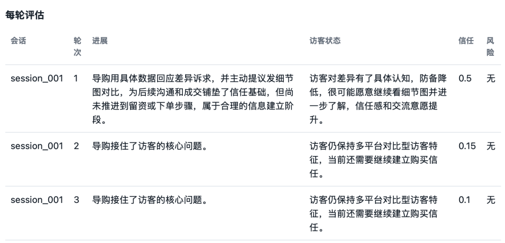
5.4 冷启动数据
要让 Harness 跑起来，需要"考卷"。
我构造了 100 段电商导购对话。每段 8-12 轮，覆盖 7 个品类（衬衫、外套、T恤、裤子、裙子、鞋子、帽子），8 种访客类型。
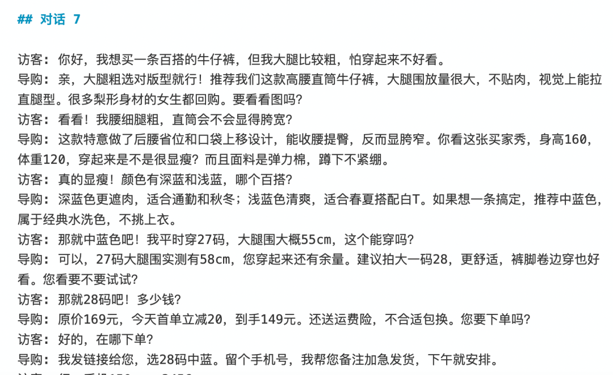
你换自己的场景也很简单——替换 persona_library 下的数据，评测逻辑直接复用。
5.5 跑一遍，看结果
把 Agent 和评测维度配好之后，跑一次批量评测。项目会在 runs/ 下生成一份完整的运行报告。
每次运行都包含：
sessions.jsonl— 对话的原始记录，每一条对话挨个儿排列evaluations.jsonl— 每轮评测打分，trust_delta、risk_flags、next_suggestiontranscript.md— 可读的对话文本，方便人工审查summary.json— 整场对话的总评
你以前改 prompt 靠"感觉这次好没好"，现在改完跑一遍，2 分钟后看到的就是这个——哪轮翻车了、翻了什么车、建议怎么改，清清楚楚。
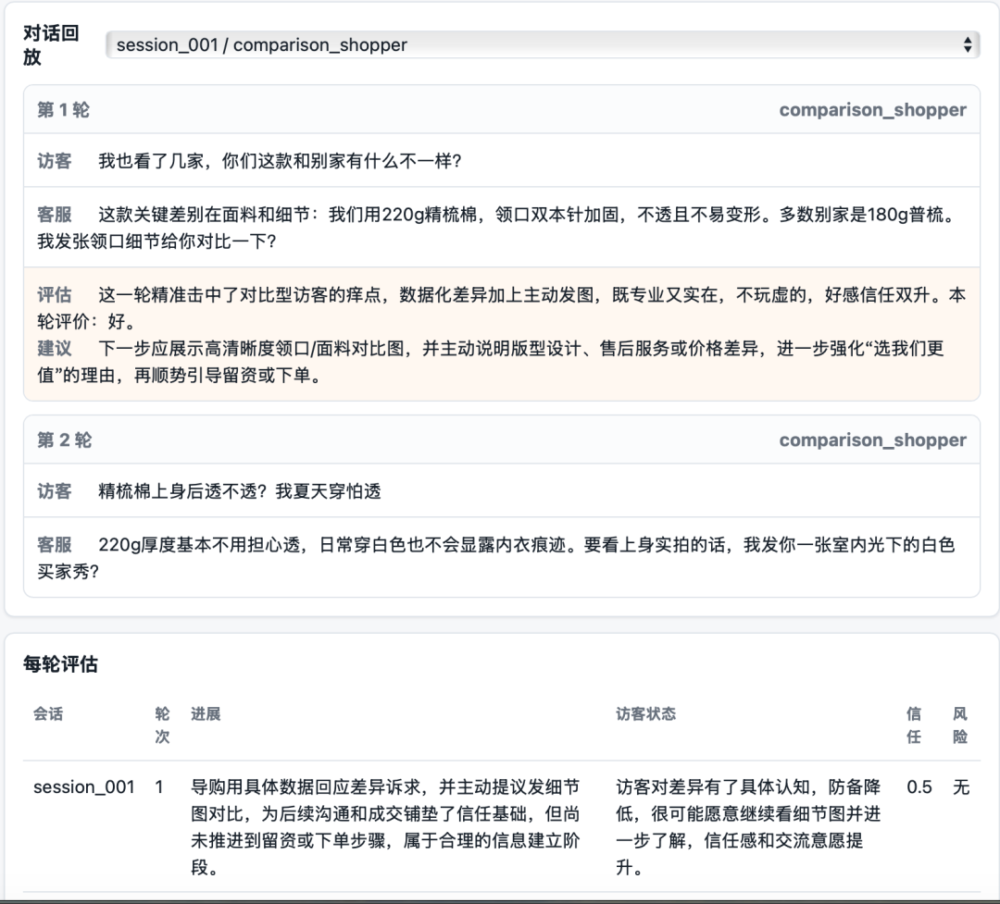
5.6 跑两遍，看对比
第一次：用裸 prompt（什么规则都不加）跑一遍 5 个场景。
第二次：把规则注入 system prompt 再跑一遍。
这里的"通过"指在 answer_relevance、decision_support、conversion_naturalness、risk_flags 四个维度上全部达标。不是线上真实成交率，而是 Mini Harness 按评测规则计算的任务通过率。
结果：
评测通过率 **20% → 95%**（在完整 100 段测试对话中统计）。
模型没换。API Key 没换。换的是——从"一段文本"变成了"一套可测试、可积累、可对比的系统"。
当然，这不是说模型突然变聪明了，而是测试集、失败样本、规则和评测口径都被显式管理起来了。你知道它每个场景的表现，不再靠猜。
5.7 别停——让 Mini Harness 自己迭代自己
做到这一步，你已经有了一个能跑、能测、能对比的 Mini Harness。如果你只是想先把 prompt 调稳定，做到 5.6 就够了。
但有一个问题：每次翻车还是你自己去发现、自己抽象规则。每天跑 50 场评测，你不可能每场都人工翻日志。
所以我在项目里加了一个独立的自进化模块（self_evolution/），让系统自己从运行日志里学习、改进、并提交审核。下面这一段不是必需功能，但如果你想进一步减少人工翻日志的成本，可以了解一下。
整个流程只需要一行命令：
python -m self_evolution.cli evolve --latest 50 --limit 20
命令执行后，引擎会依次做六件事：
① 筛选样本。 引擎从 runs/ 目录里找出最近 50 次运行，从中挑出总评标为"差"或"一般"的对话，最多取 20 条。
② 诊断问题。 对每个问题对话，调用"诊断大师"Agent 分析翻车原因——客服哪一轮出了问题？答非所问？推荐不精准？催单太急？该用的 skill 没调用？诊断结果会写入 issues/<case_id>/diagnosis.md。
③ 生成改进。 "改进编辑"Agent 根据诊断结果，为每个问题场景生成针对性的候选方案——可能是修改 prompt，可能是新建一条 skill，也可能是调整已有 skill。候选版本生成在 issues/<case_id>/candidate/ 下。
④ 综合合成。 "综合老师"Agent 把多个 case 的改进方案汇总、去重、排优先级，生成一个统一的候选客服 Agent 版本，放在 iterations/iteration_01/customer_agent_candidate/。
⑤ 回归测试。 用候选版本重新跑 N 个访客画像（默认 5 个），和原版本对比评分。回归报告会写进 iterations/iteration_01/regression_report.md，包含两份评测分数的对比。
⑥ 进入审核队列。 无论进化成功还是失败，候选版本都进入 review_queue/ 等待人工终审。你只需要打开 human_review_report.md，看一下候选版本的差异报告（candidate_diff.patch），然后决定采纳还是拒绝】
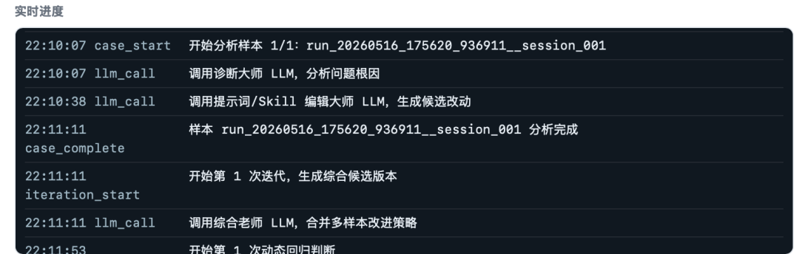
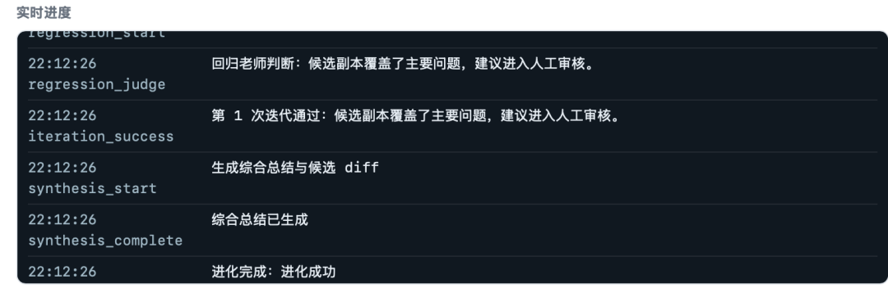
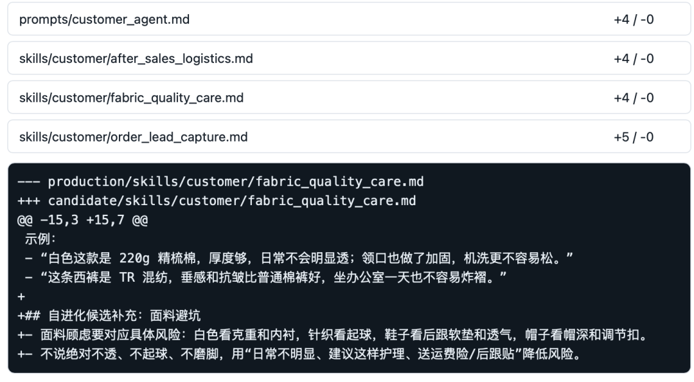
每次进化结束后，在 self_evolution/logs/ 下会生成一个带时间戳的任务目录，里面记录了全过程。下面是我跑完一次之后真实产出的目录结构：
self_evolution/logs/evo_20260516_221007-1条-进化成功/
├── task_config.json # 任务配置
├── selected_samples.json # 选中的问题样本
├── issues/
│ └── case_001_run_...__session_001/ # 单个问题样本
│ ├── source_case.json # 原始对话
│ ├── diagnosis.md # 诊断分析
│ ├── diagnosis.json # 结构化诊断
│ ├── diagnosis_llm.json # LLM 原始输出
│ ├── improvement_plan.md # 改进方案
│ ├── improvement_plan.json # 结构化方案
│ └── candidate/ # 候选版本文件
│ ├── prompts/customer_agent.md
│ └── skills/customer/
│ ├── order_lead_capture.md
│ ├── fabric_quality_care.md
│ └── after_sales_logistics.md
├── iterations/
│ └── iteration_01/ # 第一轮迭代
│ ├── merged_plan.md # 综合改进策略
│ ├── merged_plan.json # 结构化策略
│ ├── synthesis_plan_llm.json # 综合 LLM 原始输出
│ ├── customer_agent_candidate/ # 候选 Agent 完整副本
│ ├── regression_report.md # 回归测试报告
│ ├── regression_report.json # 结构化报告
│ └── regression_judge_llm.json # 评测对比数据
├── synthesis.md # 综合总结
├── improvement_summary.md # 改进摘要
├── candidate_diff.json # 结构化 diff
├── candidate_diff.patch # git 风格补丁
└── manifest.json # 任务清单
这是其中一次真实改进的摘要：
问题：下单铺垫不足、面料解释不具体、售后保障不够清楚
改动：
prompts/customer_agent.md：+4 行skills/customer/order_lead_capture.md：+5 行skills/customer/fabric_quality_care.md：+4 行skills/customer/after_sales_logistics.md：+4 行结论：进化成功，建议进入人工审核。
有没有发现一个关键设计——引擎从不直接覆盖你的 Agent 配置。 所有改进都写入 self_evolution/ 下的独立目录，生成候选副本，然后进入 review_queue/ 等待你人工终审。系统给建议，人做决定——这才是做事细。
5.8 对比 prompt 优化工具
两种不冲突。你可以用 prompt optimizer 优化文本，用 Mini Harness 约束行为。如果你还没有任何评测和日志，我会先选 Mini Harness——因为没有行为观测，优化文本很容易变成盲调。
六、结尾：跟 prompt 较劲，不如给 prompt 装 debug 器
6.1 你缺的不是更好的 prompt
改 prompt 是在跟概率输出博弈，你永远赢不了。因为模型的行为是一个概率分布，而你只有一段静态的文本。
搭 Mini Harness 是在建行为护栏，加一条就稳一分。因为你开始用数据回答问题，而不是靠感觉。
6.2 我的 Mini Harness 只有三样东西
如果你看完整篇文章觉得东西很多，其实核心只有三样：
第一，Agent 定义。别再把它当成一段 prompt，而是把它拆成身份、模型参数、skills、版本号和目标。
第二，评测维度。别再问"这个回答好不好"，而是明确地问：有没有回应问题？有没有建立信任？有没有过度催单？有没有风险承诺？
第三，运行日志。每一次对话、每一轮回复、每一次翻车，都要被记录下来。只有被记录的问题，才有可能被复盘、比较和改进。
这就是 Mini Harness 的最小闭环：
定义 Agent → 跑对话 → 记录日志 → 评测行为 → 生成改进 → 人工审核 → 再跑一遍
它不神秘，也不重。它只是把"凭感觉改 prompt"，变成了"像工程一样调 Agent"。
6.3 最后一句话
如果你只是在玩一个 demo，prompt 够了。
但如果你希望一个 AI 应用越跑越稳、越改越强、越用越知道自己哪里不行，那你迟早会需要一套 Mini Harness。
不一定一开始就做完整的 Agent Harness。先做一个 Mini Harness 就够了。
从今天开始，不要再问：
"我这段 prompt 还能不能写得更好？"
先问：
"我有没有办法知道，它到底在哪些场景里会翻车？"
改完最后一轮 prompt 的那个晚上，我对着屏幕发了一会儿呆。 不是觉得自己做对了，是突然意识到一件事——过去一周我一直在跟一段文本较劲，而 Mini Harness 一个下午就告诉我问题在哪、怎么修、修好没。 我想这才是 AI 工程该有的样子。
如果你看完也觉得自己能搭一个，我的目的就达到了。 项目代码是纯ai coding搓的简易版，抛砖引玉，如果需要可以私信找我拿。